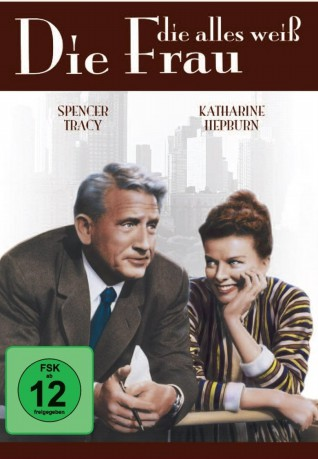
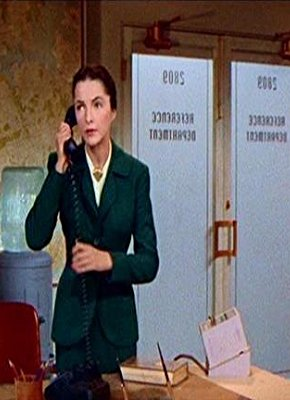

#11590 Eine Frau, die alles weiß
Alternativ: Desk Set (Englischer Titel)
 
 IMDB-Wertung: 7.3 / 10
IMDB-Wertung: 7.3 / 10  Tomatometer: 100
Tomatometer: 100  Metascore: 0
Metascore: 0 
Schauplatz der Handlung ist ein Bürohochhaus in Manhattan, die Zeit die Gegenwart. Richard Sumner ist ein Erfinder und Effizienzexperte, der einen Computer namens EMMARAC entwickelt hat. Mr. Azae, Präsident eines Rundfunksenders, hat für seine Buchhaltung bereits eines dieser Geräte angeschafft und beauftragt Sumner zu prüfen, ob auch das Informationsbüro des Unternehmens durch einen Computer sinnvoll ersetzt werden kann. Das Informationsbüro ist eine unternehmensinterne Dienstleistungsabteilung, deren Mitarbeiterinnen mit Hilfe einer Hausbibliothek Anfragen jeglicher Art beantworten. Leiterin der Abteilung ist Bunny Watson, eine Frau von verblüffender Bildung und Intelligenz, deren einzige Schwäche im Privaten liegt.
Jahr: 1957
Dauer: 103 Minuten
FSK: 12
Land: USA Studio: Twentieth Century-Fox Film CorporationTonspuren: DD2.0 - ,
Untertitel:
Auflösung: 1080p (1920x816) Größe: 8140 MB
Genre: Komödie, Liebe
Regisseur: Walter Lang
Drehbuch: Phoebe Ephron, Henry Ephron, William Marchant
Soundtrack: Cyril J. Mockridge
Darsteller:
 Spencer Tracy als Richard Sumner
Spencer Tracy als Richard Sumner Katharine Hepburn als Bunny Watson
Katharine Hepburn als Bunny Watson Gig Young als Mike Cutler
Gig Young als Mike Cutler Joan Blondell als Peg Costello
Joan Blondell als Peg Costello Dina Merrill als Sylvia Blair
Dina Merrill als Sylvia Blair- Sue Randall als Ruthie Saylor
-  Neva Patterson als Miss Warriner
- Harry Ellerbe als Smithers
- Nicholas Joy als Mr. Azae
- Diane Jergens als Alice
 Merry Anders als Cathy
Merry Anders als Cathy- Ida Moore als Old Lady
- Jesslyn Fax als Mrs. Hewitt (uncredited)
- Renny McEvoy als Man (uncredited)
- Shirley Mitchell als Myra Smithers (uncredited)
- Don Porter als Elevator Operator Don (uncredited)
- Rachel Stephens als Receptionist
- Pamela Curran als Bit Part (uncredited)
- Bill Duray als Member of the Board (uncredited)
- Harry Evans als Member of the Board (uncredited)
- Richard Gardner als Fred (uncredited)
- Charles Heard als Member of the Board (uncredited)
- Joe Lanza als Dancer (uncredited)
- Jack G. Lee als Member of the Board (uncredited)
- King Mojave als Member of the Board (uncredited)
- Sammy Ogg als Kenny (uncredited)
- Lou Southern als Dancer (uncredited)
- Hal Taggart als Member of the Board (uncredited)
- Freda Angela Wyckoff als Dancer (uncredited)
Datei: X:\1950-1959\Frau, die alles weiß, Eine (1957, FSK12, 1920x816).mkv seit 01.08.2019
Festplatte: Gemischt-01+Anime
 Es gibt insgesamt 141 Filme in der Gruppe '1950-1959'
Es gibt insgesamt 141 Filme in der Gruppe '1950-1959'